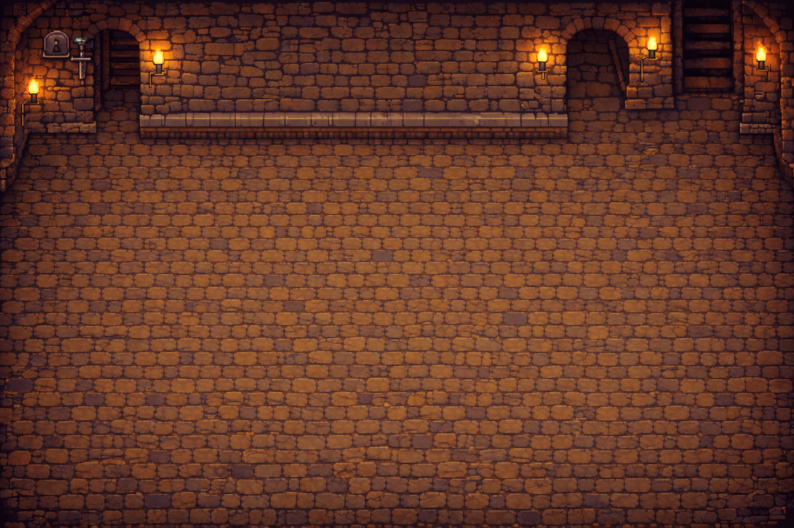

FLAGSHIP / INTERACTIVE PRODUCT
GuildUp!
A shared task list becomes a guild adventure—with a clearer view of who is doing what.

My contribution
I originated the concept and overall design, then built assignment-planner interactions, contextual hints, responsive task interfaces, position handling and AI-assisted task features. The project was developed with Chloe Lau, using her earlier canvas project as a foundation.
The problem
Team coordination can hide the effort behind a task. GuildUp gives that work a visible place: a shared hall, a task board, personal tasks and an assignment planner. The goal was to make participation and workload easier to see.
The constraint
We built the original product as a two-person hackathon team. It had to connect a playful canvas world with practical task forms and shared data. For this public edition, visitors also need to try it without accounts, paid services or access to our original database.
What I tested and checked
The portfolio edition was checked in a browser from entry and character selection through opening the assignment planner. Automated tests exercise task acceptance and completion, persistence after reload, separation of personal tasks, exclusion of real email data and workload-based assignment. These are checks of the current demo, not a claim about historical user-study results.
What failed
The original multiplayer position handling used canvas-dependent positions. Different viewport sizes could put teammates in inconsistent locations. During the later local-demo adaptation, the planner initially produced no draft assignments because its replacement service returned an empty list.
What changed
Original commit 21bcda7 normalised stored positions and rescaled received positions for the current canvas. In this portfolio edition, the planner now distributes tasks across sample guild members by current workload, avoiding overwhelmed members when others are available. This local rule is labelled separately from the original AI-backed feature.
The outcome
The public demo lets a visitor explore the hall, manage tasks and preview a workload-based allocation with data saved on their device. The original Express AI implementation remains in the repository for review. Online multiplayer, email and AI responses are outside this demo.
Contribution evidence
Original commits 7900899 (planner), 87cb262 (contextual hints), 53f21cf (responsive interfaces), 21bcda7 (positions) and c3476d2 (AI assistance) support the implementation account. Commit totals are not a measure of each person’s workload.
Credits
Collaborative work by Celeste Tong and Chloe Lau. Canvas foundation from Chloe’s Paletteburg project; character sprites from Kenney. Guild hall/object art used AI-generated assets. The new demo and documentation are later portfolio adaptations.